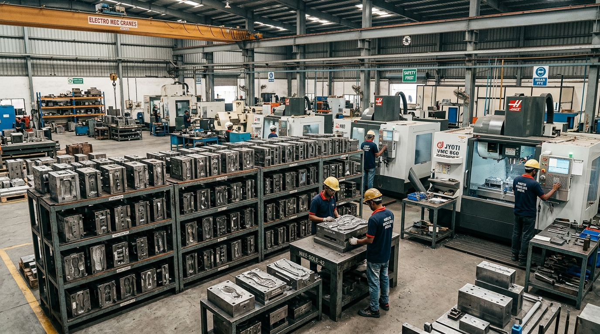

Precision footwear mould engineering house serving B2B shoe manufacturers from Kanpur, UP since 2015.
Founded in 2015 in Kanpur, Uttar Pradesh, Whizz Moulds was established to provide regional and national footwear factories with reliable, high-precision sole moulding tools. Under the leadership of Proprietor H. Verma, Whizz Moulds has expanded into a full-scale B2B toolhouse supplying custom moulds for leather shoes, sports footwear, slippers, and industrial safety boots.
Operating as a registered proprietorship (GST registered since 2019), our team of 11 to 25 skilled machinists and CAD engineers operates advanced CNC engraving machines, aluminium casting beds, and finishing workshops.
We work directly with footwear plant owners, production managers, and product designers to ensure every mould matches exact shoe last dimensions, outsole grip profiles, and material pour characteristics (PU, TPR, TPU, EVA, and Rubber).

Official corporate and manufacturing parameters for Whizz Moulds.
Technical excellence engineered for heavy industrial sole production environments.
We source aircraft-grade aluminium blocks and forged mild/stainless steel to resist warping under high hydraulic clamping pressure.
Multi-axis CNC engraving delivers sharp tread textures, crisp brand logos, and seamless parting lines that eliminate sole flashing.
In-house test pouring allows us to verify sole density, shrink factors, and ejector pin operation before shipping to your plant.
As direct manufacturers in Kanpur without middlemen, we offer transparent pricing starting from ₹20,000 to ₹1,20,000 per mould set.